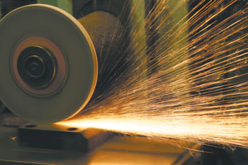
大本P55-典例1 (2026·广东广州白云中学期中)如图所示为航展飞行表演中的精彩镜头，喷出的烟雾将飞机的运动轨迹显现出来，关于这些飞机的运动，以下说法正确的是( C )
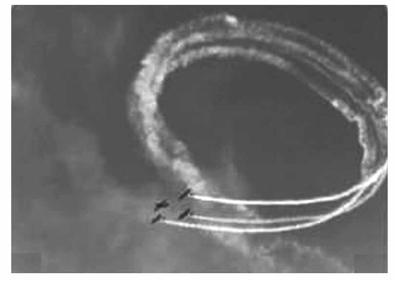
大本P55-典例2 (多选)(2026·广东深圳模拟)如图，光滑水平面上的物体受五个沿水平面的恒力F₁、F₂、F₃、F₄、F₅作用，以速率v₀沿水平面做匀速直线运动，速度方向与恒力F₅的方向相反，与F₁的方向垂直。若撤去其中某个力(其他力不变)，则在以后的运动中，下列说法正确的是( BD )
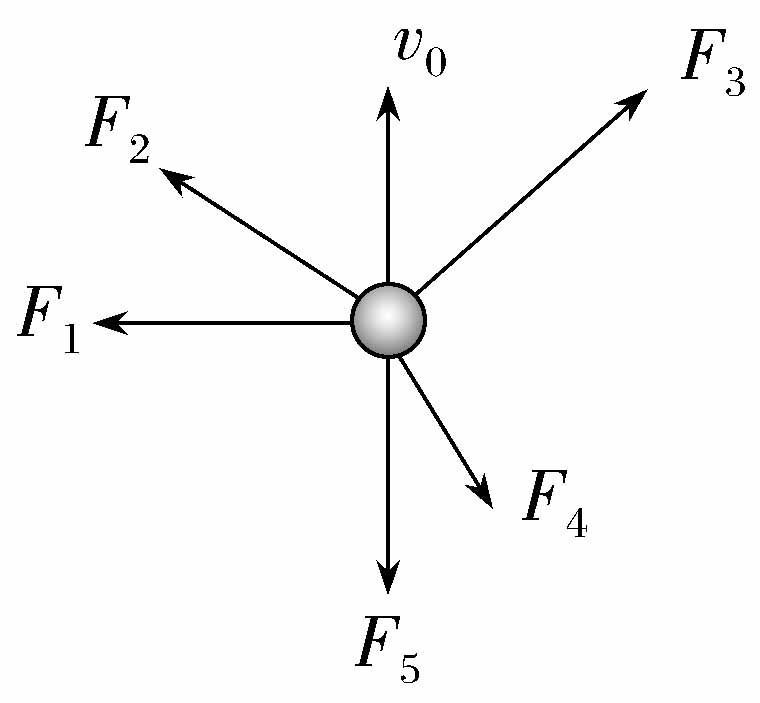
大本P56-典例3 (2026·广东九师联盟联考)一辆汽车在确认安全的情况下进行变道超车，轨迹如图所示，从A点经过P点后到达B点，假设超车过程中汽车速率不变，下列说法正确的是( C )
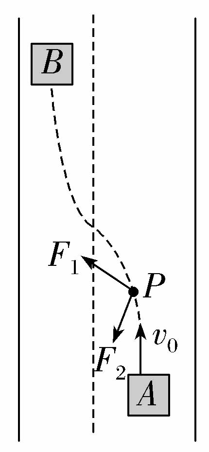
大本P55-典例4 (2026·广东东莞模拟)随着科技的进步，农村和偏远山区也已经开始用无人机配送快递，如图甲所示。无人机在0~5 s内的飞行过程中，其水平、竖直方向的分速度\(v_x\)、\(v_y\)与时间t的关系图像分别如图乙、丙所示，规定竖直方向向上为正方向。下列说法正确的是( C )
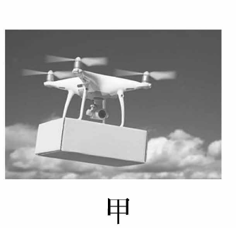
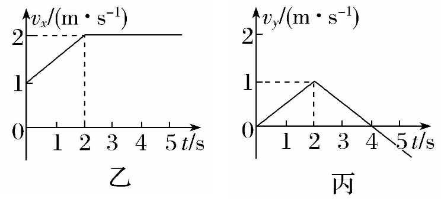
大本P57-典例5 (2026·广东江门联考)水上救援是保障群众安全的重要工作。如图所示，某救援队利用摩托艇将人员进行转移，已知水的流速恒为v₁，水流的方向平行于河岸，摩托艇的速度恒为v₂，河宽为d。该救援队由河岸的P点出发，将被困人员转移到河对岸，PQ连线与河岸垂直，则下列说法正确的是( C )
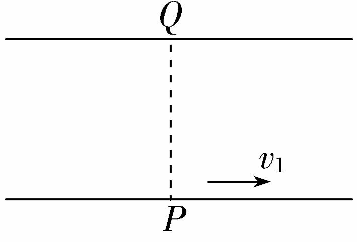
大本P57-典例6 小船渡河，设河水流速及船在静水中的速度均恒定，河两岸平行。当船头指向正对岸航行时，渡河过程中所通过的路程是河宽的 \(\sqrt{5}\) 倍。若该船要以最短位移过河，则其最短位移是河宽的( C )
大本P57-典例7 (2026·广东肇庆模拟)如图所示，水速为v，消防武警驾驶冲锋舟，若冲锋舟以最小速度和最短时间两种方案，沿与平直河岸成30°角的线路把被困群众从A处送到对岸安全地B处，则两种方案中冲锋舟最小速度v₁和最短时间的冲锋舟速度v₂之比为( D )
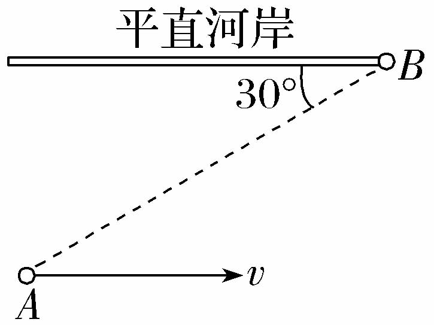
关联速度
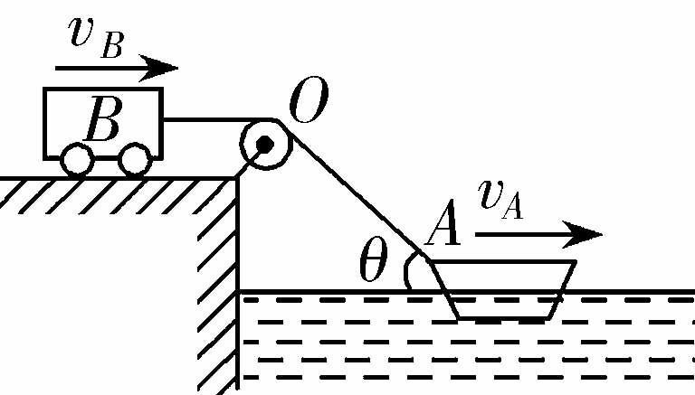
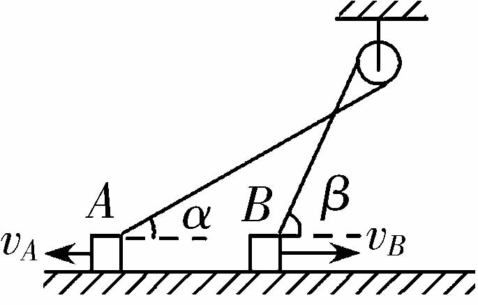
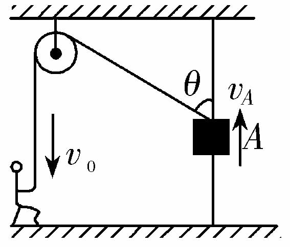
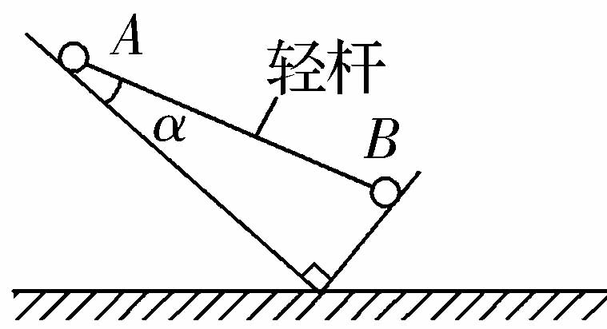
大本P58-典例8 (2025·黑吉辽蒙卷)如图，在趣味运动会的“聚力建高塔”活动中，两长度相等的细绳一端系在同一塔块上，两名同学分别握住绳的另一端，保持手在同一水平面以相同速率v相向运动。为使塔块沿竖直方向匀速下落，则v( B )
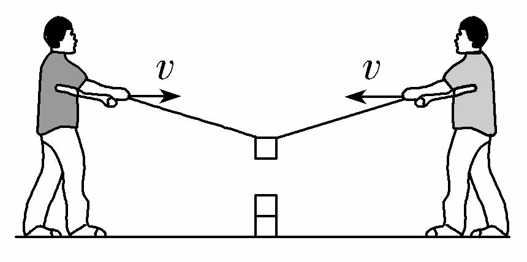
大本P58-典例9 甲、乙两光滑小球(均可视为质点)用铰链与轻直杆连接，乙球处于光滑水平地面上，甲球套在光滑的竖直杆上，初始时轻杆竖直，杆长为4 m。施加微小扰动，使得乙球沿水平地面向右滑动，当乙球距离起点3 m时，甲球的速度为v₁，乙球的速度为v₂，如图所示。下列说法正确的是( B )
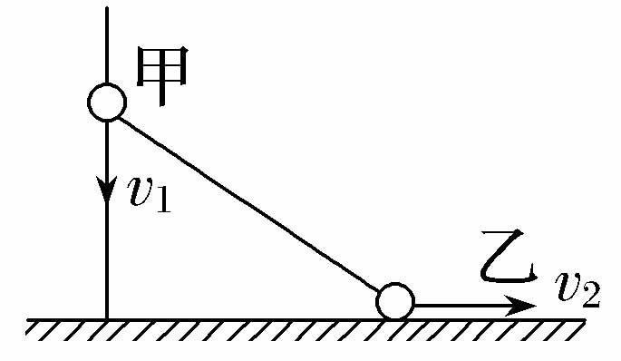
抛体运动规律
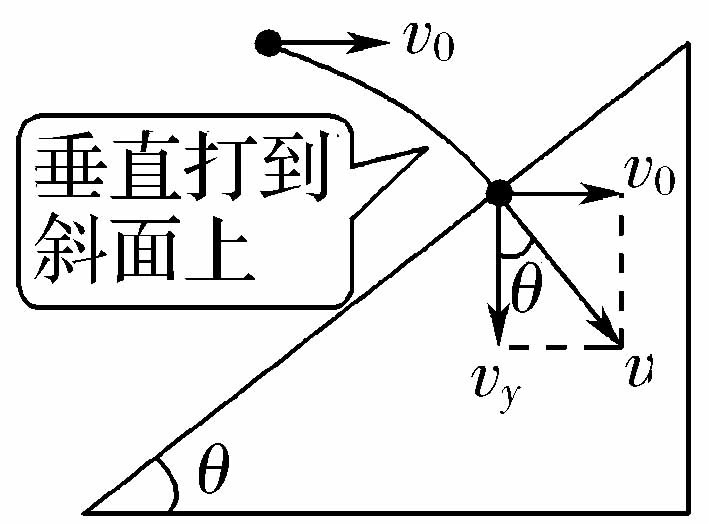
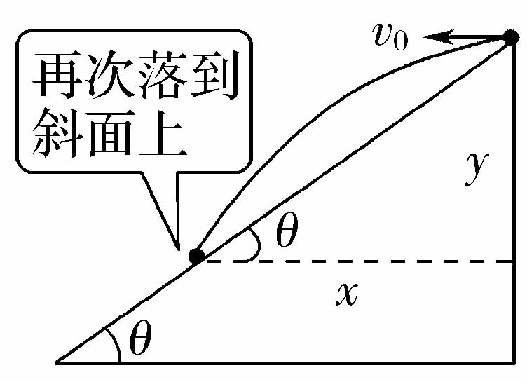
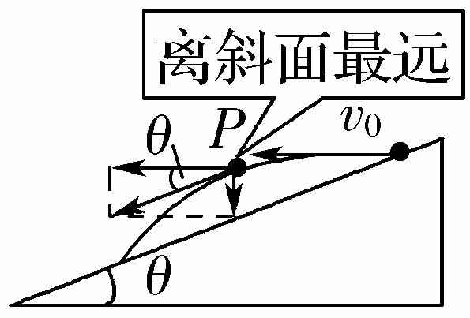
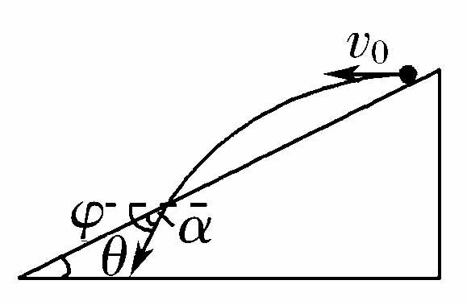
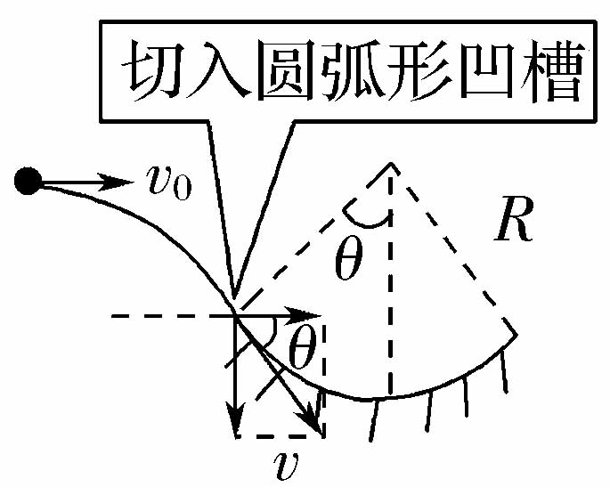
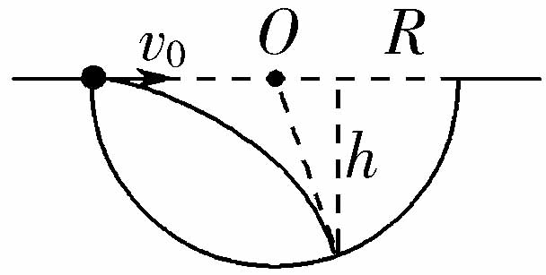
大本P59-典例1 (2022·广东卷)如图所示，在竖直平面内，截面为三角形的小积木悬挂在离地足够高处，一玩具枪的枪口与小积木上P点等高且相距为L。当玩具子弹以水平速度v从枪口向P点射出时，小积木恰好由静止释放，子弹从射出至击中积木所用时间为t。不计空气阻力。下列关于子弹的说法正确的是( B )
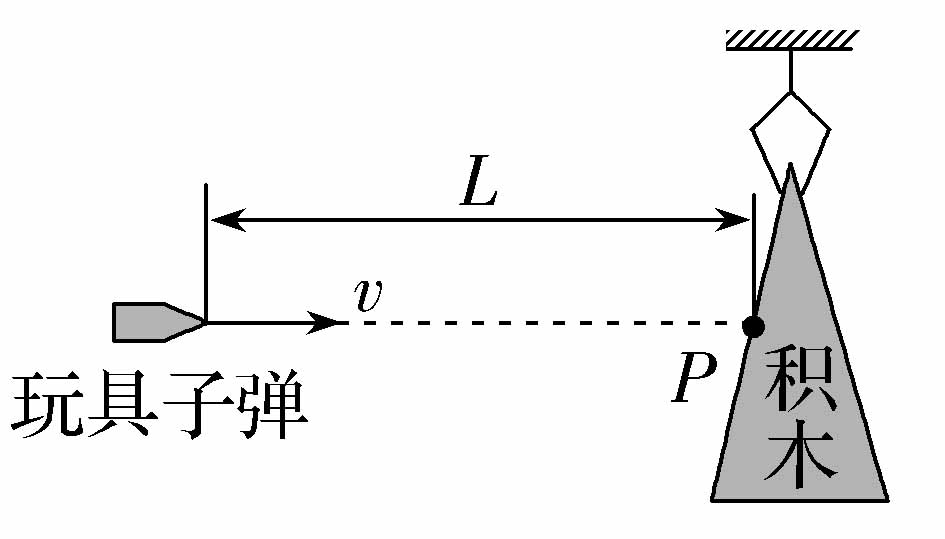
大本P55-典例2 (2026·广东部分学校模拟)如图所示，一小球从O点水平抛出后的轨迹途经A、B两点，已知小球经过A点时的速度大小为13 m/s，从O到A的时间和从A到B的时间都等于0.5 s，重力加速度大小g取10 m/s²，不计空气阻力，下列说法正确的是( D )
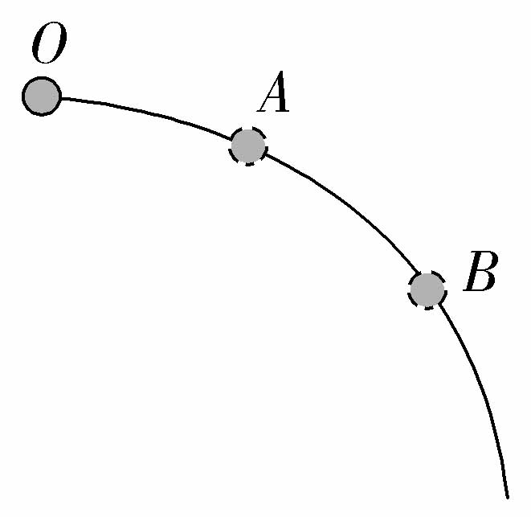
大本P60-典例3 (2026·广东部分学校联考)如图所示，倾角为37°的斜面体固定在水平面上，小球A在斜面底端正上方以速度v₁向右水平抛出，同时，小球B在斜面顶端以速度v₂向左水平抛出，两球抛出点在同一水平线上，结果两球恰好落在斜面上的同一点，且A球落到斜面上时速度刚好与斜面垂直，不计小球的大小，sin 37°=0.6，cos 37°=0.8，则v₁∶v₂等于( D )
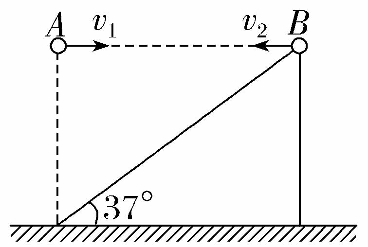
大本P60-典例5 (2024·海南卷)在跨越河流表演中，一人骑车以25 m/s的速度水平冲出平台，恰好跨越宽度为x=25 m的河流落在河对岸平台上，不计空气阻力，g取10 m/s²，则两平台的高度差h为( B )
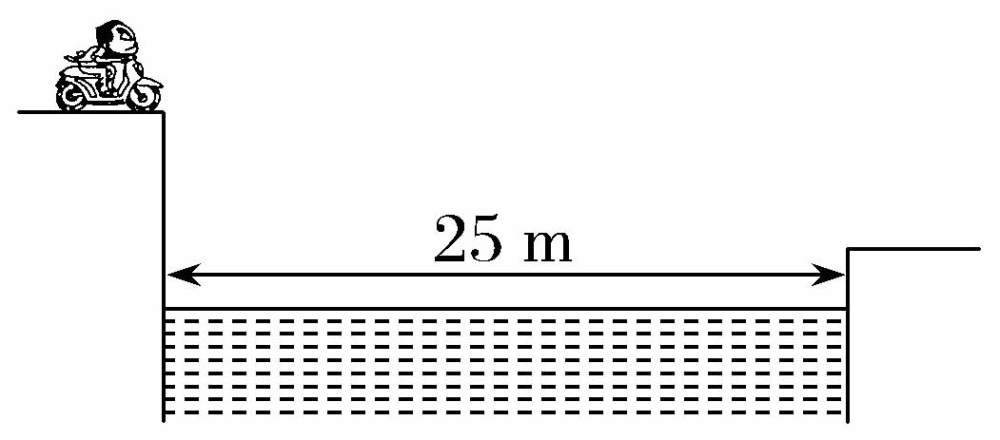
大本P61-典例7 (2026·广东深圳模拟)如图，射击训练场内，飞靶从水平地面A点以仰角θ斜向上飞出，落在相距100 m的B点，最高点距地面20 m。忽略空气阻力，重力加速度取10 m/s²，则( D )
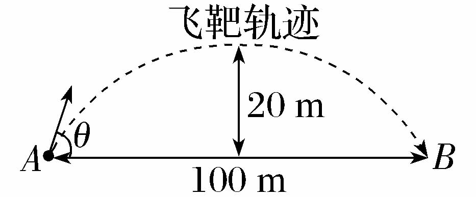
小本P299-3 (2026·广东广州模拟)如图，潜艇从海水的高密度区驶入低密度区过程称为“掉深”。图(a)，某潜艇在高密度区水平向右匀速航行;t=0时，该潜艇开始“掉深”，图(b)为其竖直方向的速度—时间图像，水平速度v保持不变。若以水平向右为x轴，竖直向下为y轴，则潜艇“掉深”后的0~30 s内，能大致表示其运动轨迹的图形是( B )
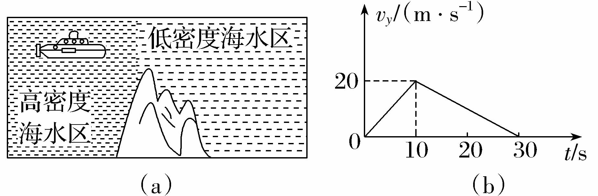
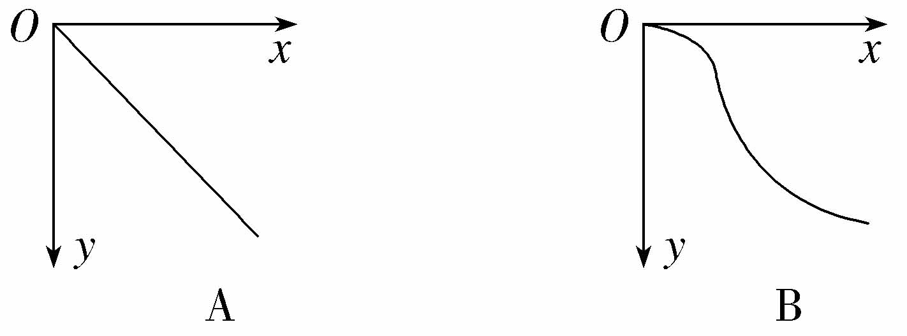
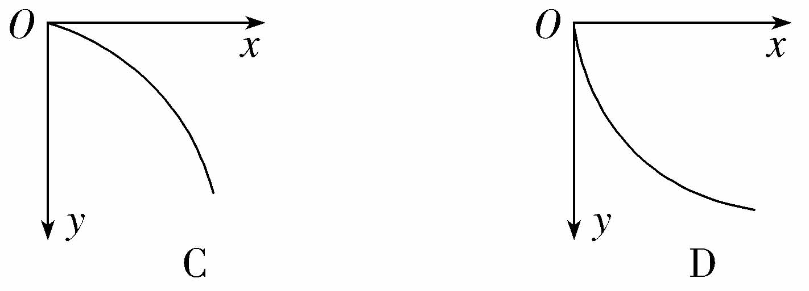
小本P300-8 (2026·广东湛江调研)如图所示，小船以大小为v₁、方向与上游河岸成θ角的速度(在静水中的速度)从A处过河，经过时间t正好到达正对岸的B处。现要使小船在更长的时间内过河并且也正好到达正对岸B处，在水流速度不变的情况下，可采取下列方法中的( D )
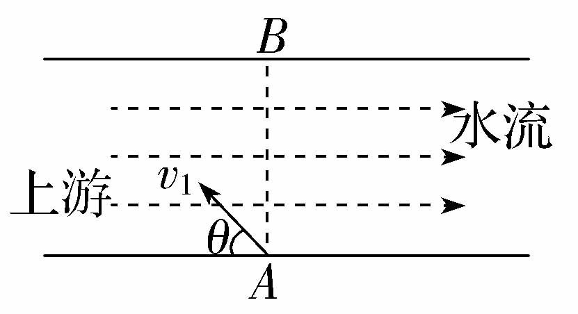
小本P301-1 (2026·广东梅州调研)“打水漂”是一种常见的娱乐活动，以一定的高度水平扔出的瓦片，会反复在水面上弹跳前进，假设瓦片和水面相撞后，在水平和竖直方向速度大小均减小，以下四幅图有可能是瓦片轨迹的是( C )
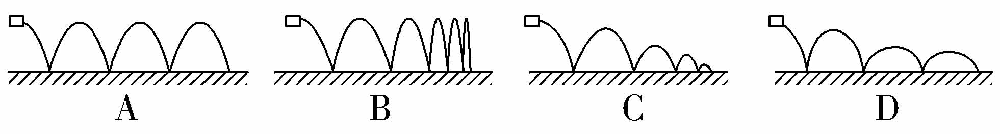
小本P301-2 (多选)(2026·广东清远模拟)如图所示，x轴沿水平方向，y轴沿竖直方向。图中画出了从y轴上沿x轴正方向抛出的两个小球a和b的运动轨迹，不计空气阻力，则( AC )
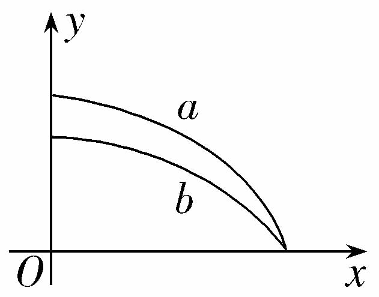
小本P301-3 (多选)(2026·广东梅州模拟)亲子游戏有益于家长与孩子之间的情感交流。如图，父亲与儿子站在水平地面玩抛球游戏，两人相向站立，各持一小球并将球水平抛出，下列抛球方式可能使两球在落地前相遇的有( AD )
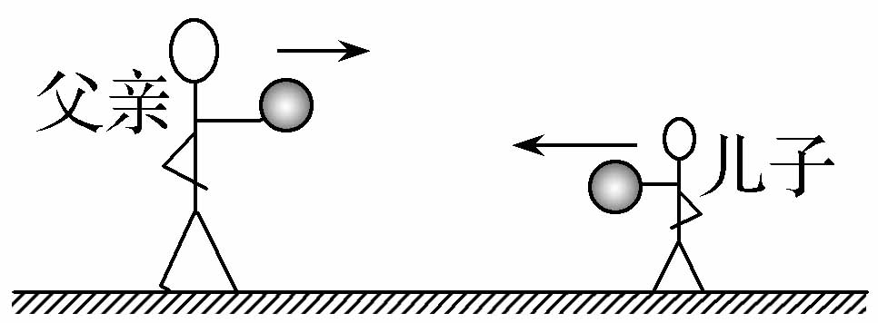
小本P301-4 (2025·湖北卷)某网球运动员两次击球时，击球点离网的水平距离均为L，离地高度分别为\(\frac{L}{2}\)、L，网球离开球拍瞬间的速度大小相等，方向分别斜向上、斜向下，且与水平方向夹角均为θ。击球后网球均刚好直接掠过球网，运动轨迹平面与球网垂直，忽略空气阻力，tan θ的值为( C )
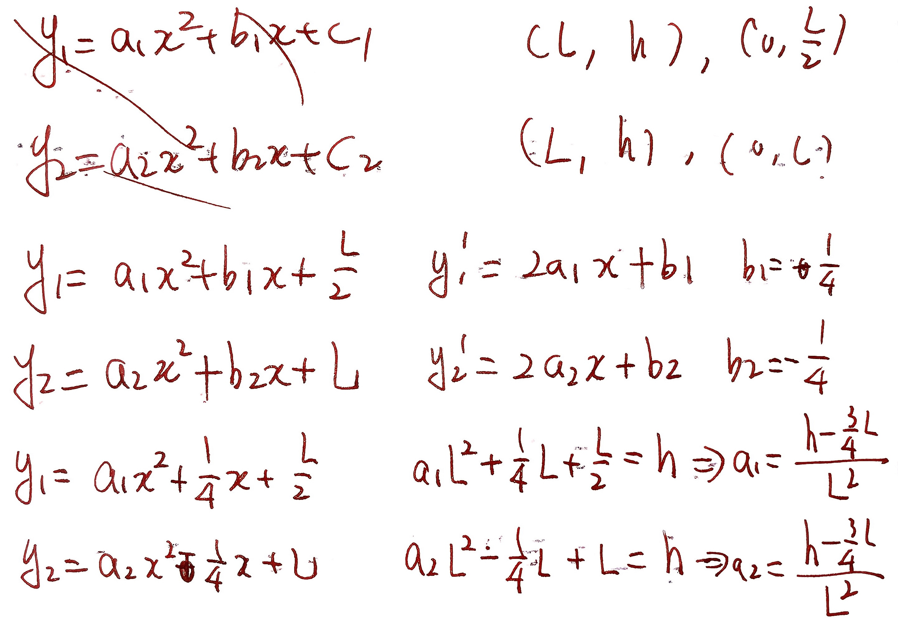
小本P301-5 (多选)如图所示，从某高度处水平抛出一小球，经过时间t到达地面时，小球速度方向与水平方向的夹角为θ，不计空气阻力，重力加速度为g。下列说法正确的是( AD )
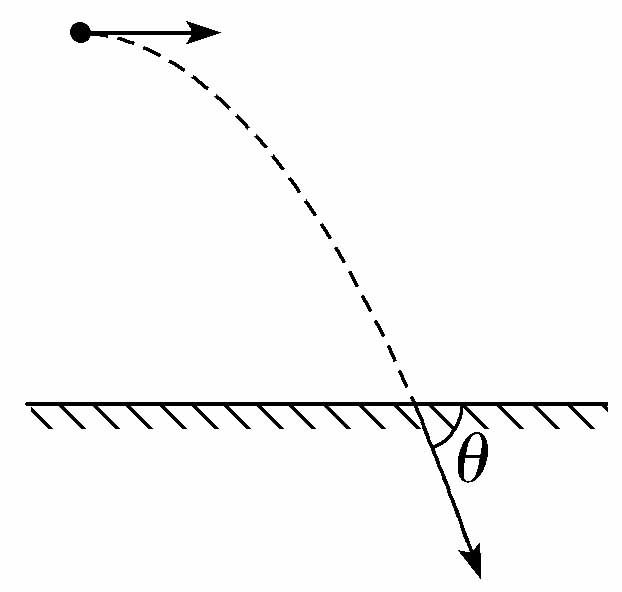
小本P301-6 如图所示，B为竖直圆轨道的左端点，它和圆心O的连线与竖直方向的夹角为α。一小球在圆轨道左侧的A点以速度v₀平抛，恰好沿B点的切线方向进入圆轨道。已知重力加速度为g，不计空气阻力，则A、B之间的水平距离为( A )
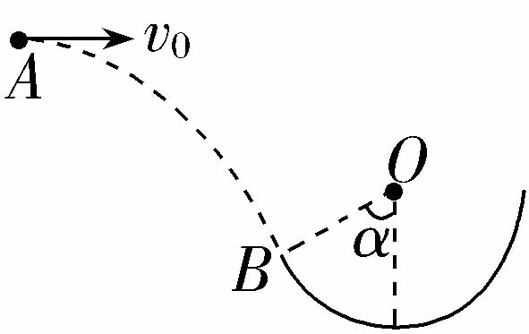
小本P301-7 (多选)(2026·广东汕头模拟)如图所示为某喷灌机的喷头正在进行农田喷灌，喷头出水速度的大小和方向可以调节，已知图示出水速度方向与水平方向夹角θ=30°，假设喷头贴近农作物表面，忽略空气阻力，下列调整方式可使水喷得更远的是( BD )
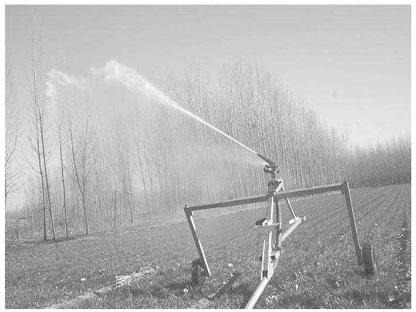
小本P301-8 (多选)(2026·广东广州检测)如图所示，某人从高出水平地面h的山坡上P点水平击出一个质量为m的高尔夫球，飞行中持续受到一阵恒定的水平风力的作用，高尔夫球竖直落入距击球点水平距离为L的洞穴Q。重力加速度为g，则( BCD )
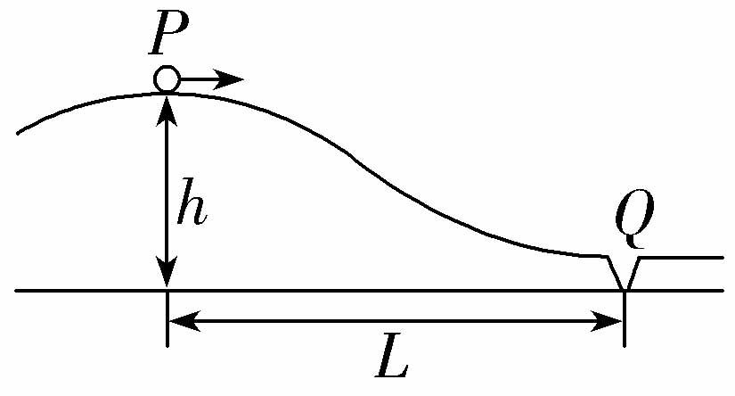
小本P302-9 (多选)(2025·山东卷)如图所示，在无人机的某次定点投放性能测试中，目标区域是水平地面上以O点为圆心，半径R₁=5 m的圆形区域，OO’垂直地面，无人机在离地面高度H=20 m的空中绕O’点、平行地面做半径R₂=3 m的匀速圆周运动，A、B为圆周上的两点，∠AO’B=90°。若物品相对无人机无初速度地释放，为保证落点在目标区域内，无人机做圆周运动的最大角速度应为 \(\omega_\text{max}\)。当无人机以\(\omega_\text{max}\)沿圆周运动经过A点时，相对无人机无初速度地释放物品。不计空气对物品运动的影响，物品可视为质点且落地后即静止，重力加速度大小g取10 m/s²。下列说法正确的是( BC )
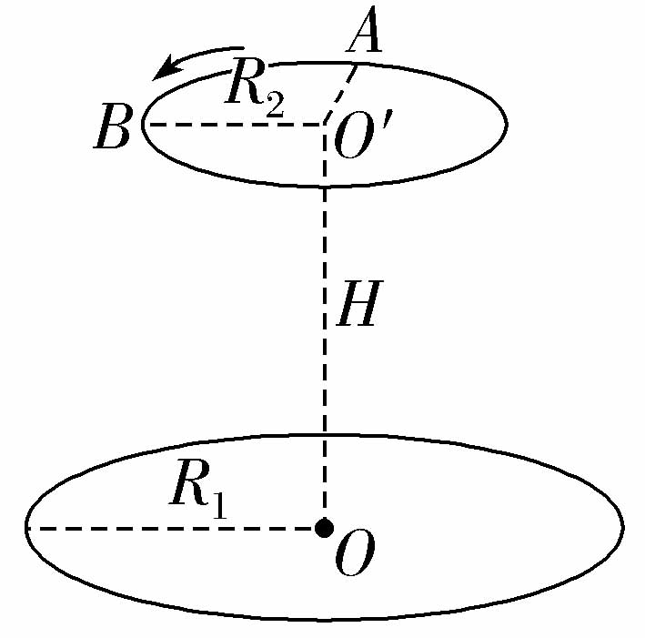
小本P302-10 如图所示的光滑斜面长为l，宽为b，倾角为θ。一物块(可看成质点)沿斜面左上方顶点P以初速度v₀水平射入，恰好从底端Q点离开斜面。已知重力加速度为g，则( D )
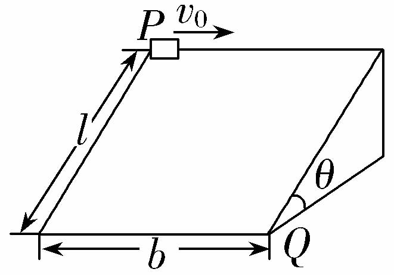
小本P302-11 (2026·广东广州模拟)如图所示，滑板爱好者先后两次从坡道A点滑出，均落至B点，第二次的腾空时间比第一次长，则( C )
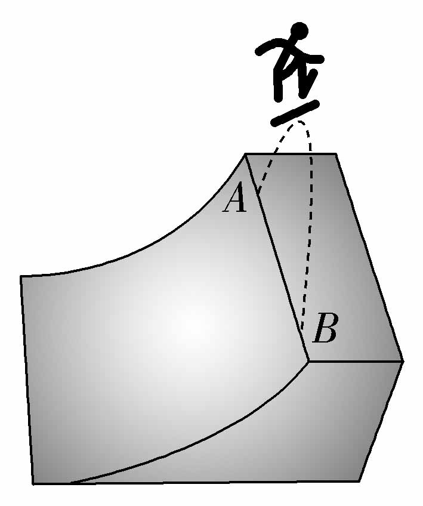
小本P302-12 (2026·广东揭阳模拟)如图所示，滑雪道AB由坡道和水平道组成，且平滑连接，坡道倾角均为45°。平台BC与缓冲斜坡CD相连，平台BC的长度L₁=24 m，斜坡CD的长度L₂=30 m。若滑雪者(视为质点)从P点由静止开始下滑，恰好到达B点。现滑雪者从A点由静止开始下滑，从B点飞出。若A、P两点间的距离d=\(15 \sqrt{2}\) m，滑雪者与滑道间的动摩擦因数μ=0.04，取重力加速度大小g=10 m/s²，不计空气阻力。
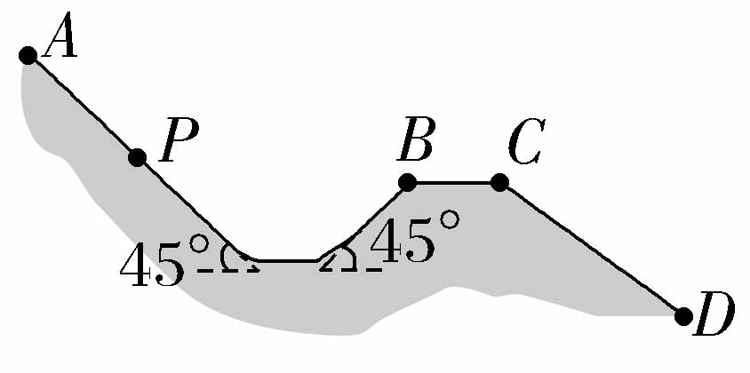
圆周运动
轨迹，速度，加速度
传动装置
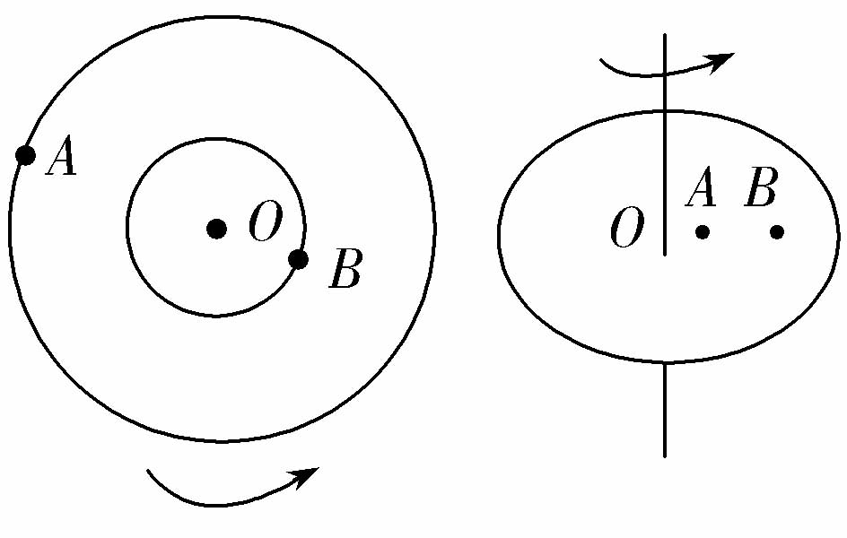
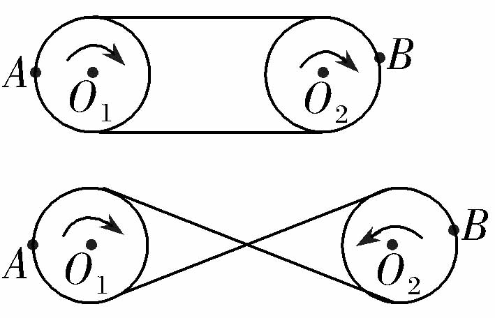
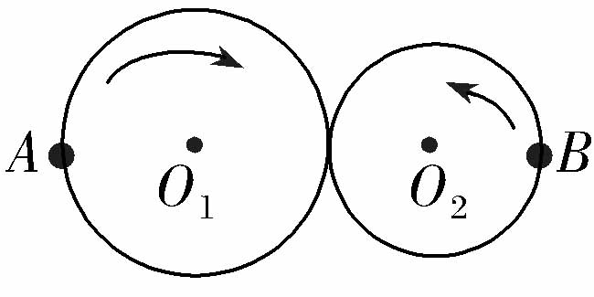
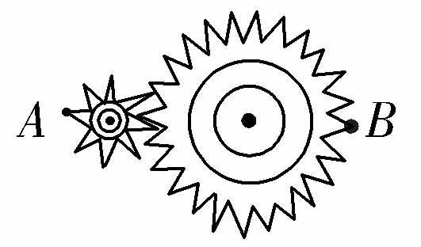
大本P62-典例1 (2025·江苏卷)游乐设施“旋转杯”的底盘和转杯分别以O、O’为转轴，在水平面内沿顺时针方向匀速转动，O’固定在底盘上。某时刻转杯转到如图所示位置，杯上A点与O、O’恰好在同一条直线上，则( B )
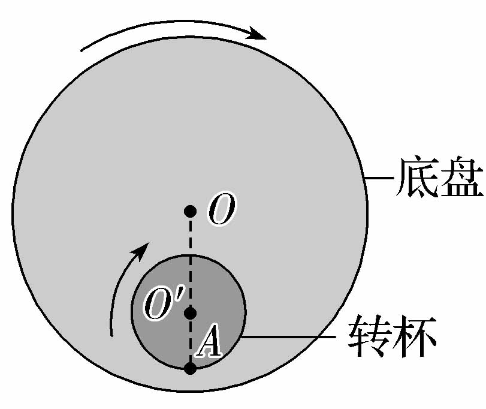
大本P63-典例2 (多选)(2025·福建卷)春晚上转手绢的机器人，手绢上有P、Q两点，圆心为O，OQ=\(\sqrt{3}\)OP，手绢做匀速圆周运动，则( AD )
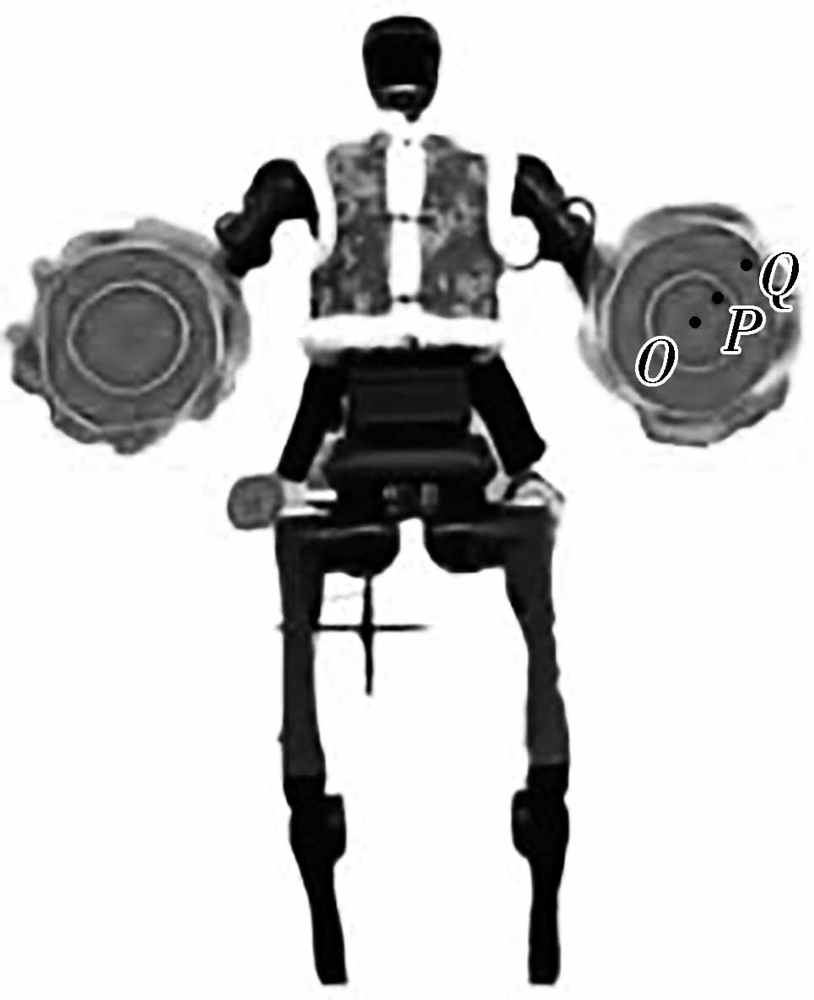
向心力
受力分析
离心现象
\(F_\text{向} = m a_\text{向}\)
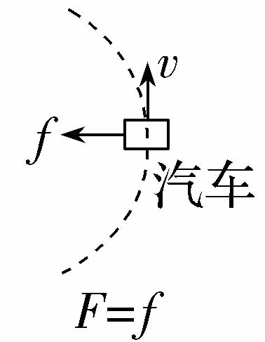
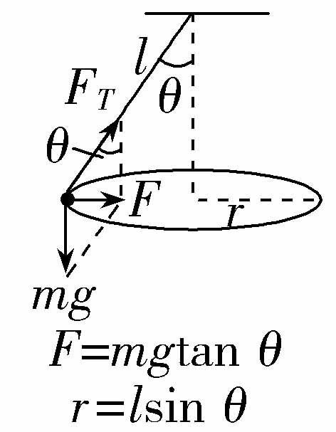
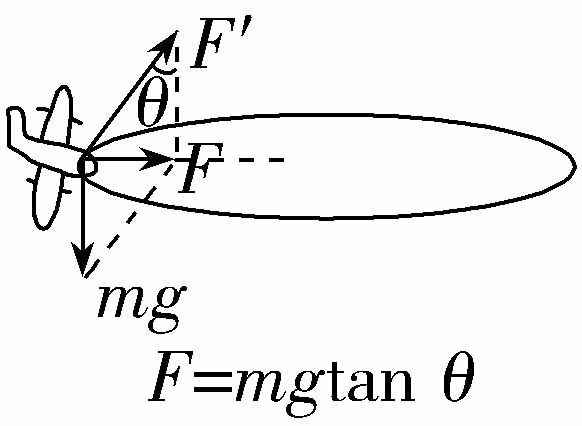
大本P64-典例4 (多选)(2025·广东卷)将可视为质点的小球沿光滑冰坑内壁推出，使小球在水平面内做匀速圆周运动，如图所示。已知圆周运动半径R为0.4 m，小球所在位置处的切面与水平面夹角θ为45°，小球质量为0.1 kg，重力加速度g取10 m/s²。关于该小球，下列说法正确的有( AC )
大本P64-典例5 (多选)(2026·广东韶关模拟)上海磁悬浮列车线路需要转弯的地方有三处，其中设计的最大转弯处半径达到8000米，用肉眼看几乎是一条直线，而转弯处最小半径也达到1300米。一个质量为50 kg的乘客坐在以360 km/h速率驶过半径2500 m弯道的车厢内，下列说法正确的是(g取10 m/s²)( ABD )
小本P303-1 (2026·广东佛山联盟联考)我国明代出版的《天工开物》中记录了我们祖先的劳动智慧，如图所示为书中记载的“牛转翻车”，利用畜力转动不同半径齿轮来改变水车的转速，从而将水运送到高处。图中A、B分别是两个现代齿轮边缘上的点，两齿轮的半径之比\(r_\text{A}:r_\text{B}=4:3\)，在齿轮转动过程中( C )
小本P303-2 (多选)(2026·广东珠海模拟)如图所示，陀螺上a、b、c三点钉了三颗质量均为m=0.01 kg的小钉子，三颗钉子距离中心的距离分别为Ra=0.5 cm，Rb=2 cm，Rc=5 cm。当陀螺以ω=10 rad/s的角速度旋转时，转轴在竖直方向，g取10 m/s²，则下列说法正确的是( BC )
小本P303-3 如图所示，直径为d的竖直圆筒绕中心轴线以恒定的转速匀速转动，一子弹以水平速度沿圆筒直径方向从左侧射入圆筒，从右侧射穿圆筒后发现两弹孔在同一竖直线上且相距为h，重力加速度为g，则下列说法错误的是( B )
小本P303-4 (2026·广东汕头模拟)如图所示是一种能够方便脱水的地拖桶，拖把脱水时把拖把头放进脱水桶，用脚上下踩踏踏板可以把拖把头中的水分脱干。下列说法正确的是( C )
小本P303-5 (2026·广东惠州模拟)图(a)为某游乐场的“旋转秋千”，它可以简化为图(b)所示的模型，已知圆盘的半径d=1.5 m，悬绳长l=2.5 m。圆盘以恒定的角速度转动，稳定时测得悬绳与竖直方向的夹角θ=37°，已知sin 37°=0.6，cos 37°=0.8，重力加速度g取10 m/s²，不计空气阻力。下列说法正确的是( C )
小本P304-6 (多选)在修筑铁路时，弯道处的外轨会略高于内轨。如图所示，当火车以规定的行驶速度转弯时，内、外轨均不会受到轮缘的挤压，设此时火车的速度大小为v，重力加速度为g，两轨所在面的倾角为θ，则( AB )
小本P304-7 (2025·山东卷)某同学用不可伸长的细线系一个质量为0.1 kg的发光小球，让小球在竖直面内绕一固定点做半径为0.6 m的圆周运动。在小球经过最低点附近时拍摄了一张照片，曝光时间为 \(\dfrac{1}{50}\) s。由于小球运动，在照片上留下了一条长度约为半径 \(\dfrac{1}{5}\) 的圆弧形径迹。根据以上数据估算小球在最低点时细线的拉力大小为( C )
小本P304-8 (2026·广东潮州模拟)如图是某型号无人机绕拍摄主体做水平匀速圆周运动时的示意图。已知无人机的质量为m，无人机的轨道距拍摄对象高度为h，无人机与拍摄对象距离为r，无人机飞行的线速度大小为v，重力加速度为g，则无人机做匀速圆周运动时( C )
小本P304-9 (2026·广东广州广雅中学月考)有关圆周运动的基本模型，下列说法正确的是( C )
小本P304-10 (2026·广东惠州调研)如图所示，一根细线下端拴一个金属小球Q，细线穿过小孔(小孔光滑)，另一端连接在金属块P上，P始终静止在水平桌面上，若不计空气阻力，小球在某一水平面内做匀速圆周运动(圆锥摆)。实际上，小球在运动过程中不可避免地受到空气阻力作用，因阻力作用，小球Q的运动轨迹发生缓慢的变化(可视为一系列半径不同的圆周运动)。下列判断正确的是( B )
小本P304-11 (2024·广东卷)如图所示，在细绳的拉动下，半径为r的卷轴可绕其固定的中心点O在水平面内转动。卷轴上沿半径方向固定着长度为l的细管，管底在O点。细管内有一根原长为l2、劲度系数为k的轻质弹簧，弹簧底端固定在管底，顶端连接质量为m、可视为质点的插销。当以速度v匀速拉动细绳时，插销做匀速圆周运动。若v过大，插销会卡进固定的端盖，使卷轴转动停止。忽略摩擦力，弹簧在弹性限度内。要使卷轴转动不停止，v的最大值为( A )
小本P305-12 (2026·广东揭阳模拟)如图所示，O为半球形容器的球心，半球形容器绕通过O的竖直轴以角速度ω匀速转动，放在容器内的两个质量相等的小物块a和b相对容器静止，b与容器壁间恰好没有摩擦力的作用。已知a和O、b和O的连线与竖直方向的夹角分别为60°和30°，则下列说法正确的是( A )
小本P305-13 (2026·广东阳春模拟)如图所示，水平地面与一半径为L的竖直光滑圆弧轨道相接于B点，轨道上的C点位置处于圆心O的正下方。距离地面高度也为L的水平平台边缘上的A点有质量为m的小球以\(v_0 = \sqrt{2gL}\)的初速度水平抛出，小球在空中运动至B点时，恰好沿圆弧轨道在该点的切线方向滑入轨道。小球运动过程中空气阻力不计，重力加速度为g，求:
(1)45° (2)(4+22)mg
大本P64-典例1 (多选)(2026·广东广州模拟)如图所示，两个质量均为m的小木块a和b(可视为质点)放在水平圆盘上，a与转轴OO’的距离为l，b与转轴的距离为2l。木块与圆盘间的最大静摩擦力为木块所受重力的k倍，重力加速度大小为g。若圆盘从静止开始绕转轴缓慢地加速转动，用ω表示圆盘转动的角速度，且最大静摩擦力等于滑动摩擦力，则下列说法正确的是( AC )
大本P65-典例2 (2026·广东佛山模拟)如图所示，一根长为1.0 m的轻绳一端系在固定横轴的O点上，另一端系着一个质量为1 kg的小球(小球半径忽略不计)。O点距离光滑水平桌面的距离为0.8 m，水平桌面足够大。若想让小球对水平桌面压力为零，可以让小球在某一水平面上做匀速圆周运动，重力加速度取10 m/s²，cos 37°=0.8，则匀速圆周运动的角速度ω应满足( B )
大本P65-典例3 (2026·广东江门调研)如图所示，水平圆台可以绕其中心轴转动。在圆台中心两侧放上甲、乙两物体，两物体的质量均为m，均可视为质点，甲、乙两物体到圆台中心距离分别为2R、R，其连线过圆台中心。两物体与圆台间的动摩擦因数均为μ，设最大静摩擦力等于滑动摩擦力，重力加速度为g。
竖直面圆周运动
大本P66-典例4 (多选)如图所示，长为0.4 m的轻绳拴着质量为m=0.5 kg 的小球(可视为质点)在竖直平面内做圆周运动，g取10 m/s²。下列说法正确的是( ABC )
大本P66-典例5 (2026·广东东莞外国语学校月考)如图所示，将内壁光滑、半径为R的圆形细管竖直固定放置，细管内径远小于R，一质量为m的小球(视为质点)在管内做圆周运动，小球过最高点时的速度为v，重力加速度为g，则下列说法正确的是( D )
大本P66-典例6 如图所示，轻杆长3L，在杆两端分别固定质量均为m的球A和B，光滑水平转轴穿过杆上距球A为L处的O点，外界给系统一定能量后，杆和球在竖直平面内转动，球B运动到最高点时，杆对球B恰好无作用力。忽略空气阻力，则球B在最高点时( C )